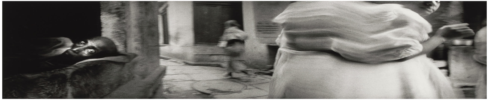

Declarations

Michael Ackerman, Benaras-India (1994)
-
Personal and contact information of group members, researchers and various other people are shared for professional and academic purposes
only and should not be used otherwise.
-
The scientific views and opinions expressed in this webpage are solely personal and do not necessarily reflect the position of the research groups, funding agencies, or any other entity associated. While this webpage uses logos of various institutes, it is an externally owned and run webpage.
-
This webpage is inspired from the
mnmlist theme by
Leo Babauta, to which its author has released all claims on copyright and has put all the contents into the public domain. No permission is needed to copy, distribute, or modify the content of this or that particular site. Credit is appreciated but not required. Do whatever the hell you like.
-
This webpage uses the Clack font by
Matthew Hinders-Anderson and the Work Sans font by
Wei Huang. Furthermore, the blog pages use the Pantasia font by
Wei Huang.
-
All artworks on this website are sourced from open-access collections. Additionally, the photographs, unless I am in them, are mine.
back to home